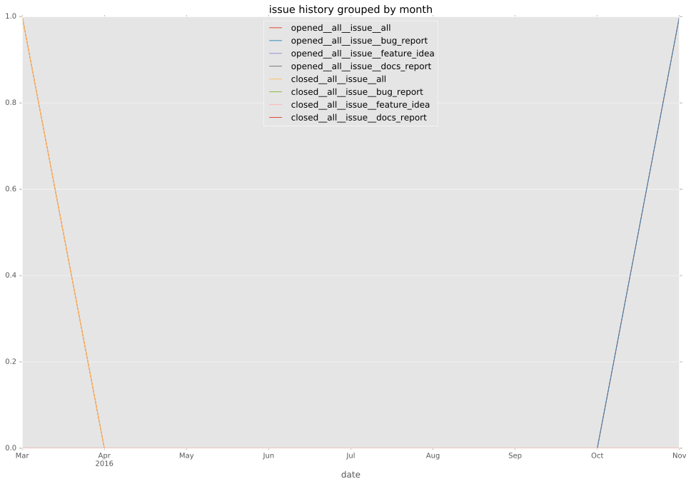

total issue counts
docs report: 1
pullrequest: 3
docs pull request: 1
feature pull request: 1
issue: 1
new plugin: 1
issue history

days open by issue type
all
count: 5
std: 17.5698605572
min: 0
max: 33
median: 3.0
mean: 13.8
pullrequest
count: 0
std: nan
min: nan
max: nan
median: nan
mean: nan
docs pull request
count: 2
std: 0.0
min: 0
max: 0
median: 0.0
mean: 0.0
docs report
count: 1
std: nan
min: 3
max: 3
median: 3.0
mean: 3.0
feature pull request
count: 0
std: nan
min: nan
max: nan
median: nan
mean: nan
issue
count: 0
std: nan
min: nan
max: nan
median: nan
mean: nan
new plugin
count: 2
std: 0.0
min: 33
max: 33
median: 33.0
mean: 33.0
closures grouped by total days open